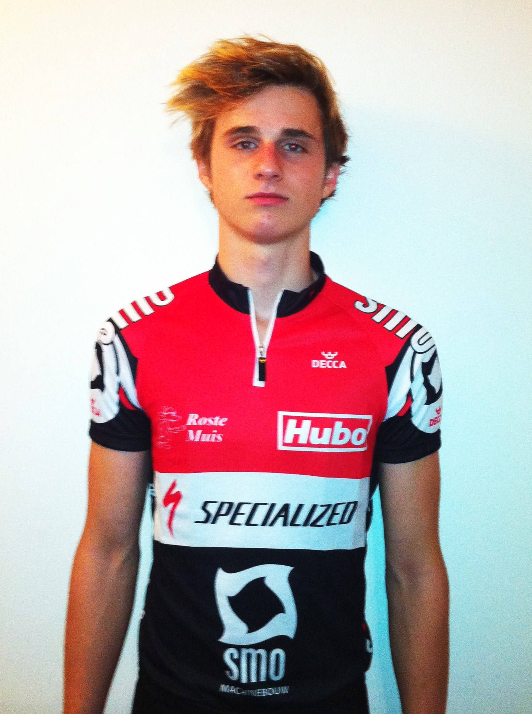

We hebben dit jaar terug een aantal nieuwe leden in het team. De komende weken stellen we ze aan u voor.

Hoelang zit je al in de triatlonsport en hoe ben je er mee begonnen?Rond Jeugd C ben ik gestart dus toch al zeven jaar. Ik ben er mee begonnen omdat ik zeer graag sportte en ik moeilijk kon kiezen tussen het ruime aanbod. Triatlon was ideaal omdat het direct drie disciplines in één sport was.
Was je ervoor ook sportief actief?Ik heb nog drie jaar gevoetbald en één jaar gezwommen.
Hoe ziet je wekelijks trainingsschema er een beetje uit?
Gemiddeld 18km zwemmen – 200 fietsen – 50km lopen.
Is dit te combineren met je studies/werk?
Ik zit in mijn eerst jaar hoger onderwijs in Brugge waar ik de richting Sport & Bewegen volg. Ik doe mijn best om studie en sport te combineren maar het is soms zeer lastig.
In welk onderdeel wil je nog veel progressie maken?
In het zwemmen.
Hoe ziet je wedstrijdkalender voor 2012 er uit?
Belangrijkste wedstrijden; BK sprint + kwart en een paar niet-stayer wedstrijden.
Wat zijn je ambities op lange termijn?
Aansluiten bij de Belgische top op de kwart afstand.
Hoe ben je bij het SMO-Specialized Triatlon Team terecht gekomen?
Er zitten veel atleten in het team waarmee ik trainde in Leuven. Ook de goede werking van de club en mijn verhuis naar Gent vond ik het ideale moment om te veranderen van club.